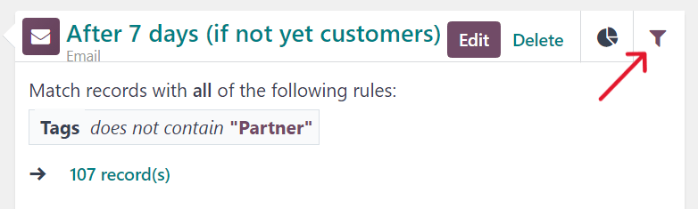
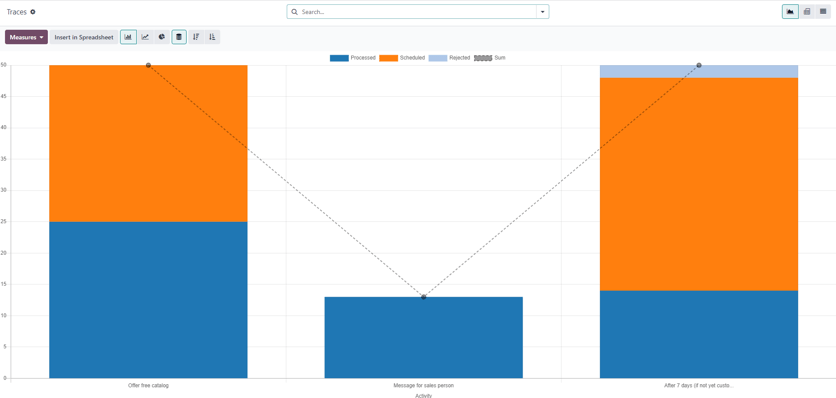

Campaign metrics¶
Campaign metrics are detailed statistics and analytics within a marketing campaign, measuring its success and effectiveness. Triggered marketing activities populate relevant activity blocks with real-time metrics, in the campaign detail form.
Activity analytics¶
In the Workflow section of a campaign detail form in the Marketing Automation app, where the various campaign activities are located, a collection of useful data can be found on every individual activity block, like number of communications Sent, percentage of messages that have been Clicked, and more.

To the left of the activity block, the configured trigger time is displayed as a duration (either Hours, Days, Weeks, or Months) if it corresponds to period after the workflow begins.
Note
If the trigger time is dependent on another activity or triggering action (e.g. Mail:
Replied, etc.) the time is displayed, along with the necessary action for that activity to be
activated (e.g. Replied after 2 Hours).

In the activity block, an icon represents each activity type. An ‚úâÔ∏è (envelope) icon means the activity is an email. Three tiny, interlocking ‚öôÔ∏è (gear) icons means the activity is an internal action. And, a small, basic üì± (mobile) icon means the activity is an SMS.
Tip
The activity type name is also displayed in smaller font below the activity title.
Beside the activity icon, at the top of the activity block, is the title of the activity. To the right of the activity title, there are Edit and Delete buttons.
Click Edit to open the Open: Activities pop-up form for that specific activity, in which that activity can be modified. Click the Delete button to completely delete that specific activity from the workflow.
See also
Activity graph tab¶
In every activity block, the Graph (pie chart icon) tab is open by default, displaying
related metrics as a simple line graph. The success metrics are represented in green and the
rejected metrics are represented in red.
Numerical representations of both Success and Rejected activities are shown to the right of the line graph.
Tip
Hovering over any point in the line graph of the activity block reveals a notated breakdown of data for that specific date.

Beneath the graph in the activity block, for Email or SMS activity types, a line of accessible data figures provide a bird’s eye view of the campaign activity, including: Sent (numerical), Clicked (percentage), Replied (percentage), and Bounced (percentage).
Tip
Clicking any of those stats on the DETAILS line, beneath the line graph, reveals a separate page containing every specific record for that particular data point.
Activity filter tab¶
Next to the Graph tab on the activity block, there’s the option to open a Filter tab (represented by a filter/funnel icon).
Clicking the Filter tab on an activity block, reveals what the specific filters are for that particular campaign activity, and how many records in the database match that specific criteria.
Tip
Clicking the records link beneath the displayed filter reveals a separate pop-up window containing a list of all the records that match that specific campaign activity rule(s).
Link tracker¶
Odoo tracks all URLs used in marketing campaigns. To access and analyze those URLs, navigate to . Doing so reveals a Link Statistics page, wherein all campaign-related URLs can be analyzed.
The default view on the Link Statistics page is the Bar Chart view, but there are different view options available in the upper-left corner. There is the option to view the statistics as a Line Chart or Pie Chart.
Beside that, there is also the option to view the statistics as Stacked, and the data can be put into Descending or Ascending order.
To the far-left of the view options, there is the Measures drop-down menu. When clicked, the options to view the Number of Clicks or total Count are available. And, to the right of the Measures drop-down menu, there’s the ability to add any data to a spreadsheet by clicking the Insert in Spreadsheet button.
Also, in the upper-right corner of the Link Statistics page, to the far-right of the search bar, there are additional view options to choose from: the default Graph view, the Pivot table view, and the List view.
Traces¶
Odoo tracks all activities used in every marketing campaign. The data related to these activities can be accessed and analyzed in the Traces page, which can be found by navigating to .
The default view on the Traces page is the Bar Chart view, but there are different view options available in the upper-left corner. There is the option to view the statistics as a Line Chart or Pie Chart.
At the top of the graph, there’s a color key, informing the user which activities have been Processed, Scheduled, and Rejected. There’s also an outline indicator to inform users of the Sum of certain activities, as well.
Beside the various view option in the upper-left corner of the Traces page, there is also the option to view the statistics as Stacked, and the data can be put into Descending or Ascending order.
To the far-left of the view options, there is the Measures drop-down menu. When clicked, the options to view the Document ID or total Count are available. And, to the right of the Measures drop-down menu, there’s the ability to add any data to a spreadsheet by clicking the Insert in Spreadsheet button.
Also, in the upper-right corner of the Link Statistics page, to the far-right of the search bar, there are additional view options to choose from: the default Graph view, the Pivot table view, and the List view.
Participants¶
Odoo tracks all participants related to every marketing campaign. The data related to these participants can be accessed and analyzed in the Participants page, which can be found by navigating to .

The default view on the Participants page is the Pie Chart view, but there are different view options available in the upper-left corner. There is the option to view the statistics as a Line Chart or Bar Chart.
At the top of the graph, there’s a color key that describes the type of participants found in the graph.
To the far-left of the view options, there is the Measures drop-down menu. When clicked, the options to view the Record ID or total Count are available. And, to the right of the Measures drop-down menu, there’s the ability to add any data to a spreadsheet by clicking the Insert in Spreadsheet button.
Also, in the upper-right corner of the Link Statistics page, to the far-right of the search bar, there are additional view options to choose from: the default Graph view, the Pivot table view, and the List view.